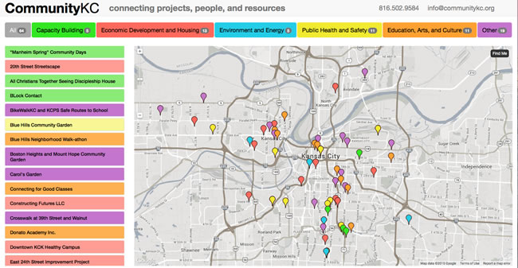

<div class="row">
    <div class="col-md-12">
        <div class="project-issues">
            <h2>Code for KC Right Now!</h2>

            <p>Open GitHub Issues on our projects that need your help.</p>
            <iframe id="widget"
                    src="http://codeforamerica.org/geeks/civicissues/widget?organization_name=Code-for-Kansas-City&number=5"
                    width="100%" height="1100" frameBorder="0"></iframe>
        </div>
        <h1>Who We Are</h1>

        <p class="lead">We’re Kansas City’s chapter of the Code for America Brigade network, a group of civic-minded
            geeks who volunteer our talents to projects that improve how our local governments and community
            organizations use the web. We strive for principles of open data and technology advocacy for civic good and
            are supported by our host organization, <a target="_blank" href="http://www.kcdigitaldrive.org/">KC Digital
                Drive</a>. The
            Brigade is about action, so join us at a Hack
            Night where we’ll commit code to make a difference in our city!</p>

        <h1>Delivered Projects</h1>

        <p><a href="http://communitykc.org" target="_blank">CommunityKC Mapping Tool</a></p>

        <p><a href="http://communitykc.org" target="_blank"></a></p>


        <h1 class="index">Help Us Deliver Projects to Benefit the KC Area</h1>

        <p class="project-list"><b>CommunityKC.org </b> Creating a community development mapping tool</p>

        <p class="project-list"><b>311 App </b> Integrating with the city’s open data portal to provide 311
            notifications and daily alerts </p>

        <p class="project-list"><b>Teardown Tattler </b> Preventing the destruction of historic buildings</p>

        <p class="project-list"><b>Awesome Transit App </b> A wayfinder for public transit</p>

        <p class="project-list"><b>FluShot Finder </b> Helping people avoid the flu bug</p>

        <p class="project-list"><b>Bizfriend.ly (live) </b> Built by the CfA fellows to help small businesses</p>

        <p class="project-list"><b>wikiKC.org (live) </b> Filling out an informational resource for all Kansas Citians
        </p>

        <p class="lead">View more on our <a href="{{ site.baseurl }}/projects">Projects</a> page</p>

        <p class="lead"><a href="http://goo.gl/forms/vrVMMfgexr" target="_blank">Suggest</a> your project or civic app
            idea</p>

        <h1 class="index">News</h1>
		<p class="lead">Code for KC had quite a cool dual event yesterday, Feb 24, 2015, for CodeAcross.
		First was the Civic Tech Forum, featuring 28 city council candidates
		sharing their views on technology's impact on the community. Then,
		we had a Civic Apps Showcase: 10 5-minute presentations from people
		who have built apps; a couple as part of the Brigade, but most from
		other sources: a big engineering firm, a couple of startups, two
		university projects, and a couple of passionate side projects. Good
		stuff, thought I'd share the videos:</p>

		<ol class="lead">
		<li> KCMO Civic Tech Forum: <a href="http://www.ustream.tv/recorded/59193588"> http://www.ustream.tv/recorded/59193588</a></li>
		<li> Civic Apps Showcase: <a href="http://www.ustream.tv/recorded/59198150"> http://www.ustream.tv/recorded/59198150</a></li>
		</ol>

		<p class="lead">Or if you just wanna read about it: <a href="http://www.kcdigitaldrive.org/civictechkc/">http://www.kcdigitaldrive.org/civictechkc/</a></p>

        <h1 class="index">Hack With Us</h1>

        <p class="lead">We meet every week on Monday night to hack, socialize and learn. Join us on Meetup for the
            latest info. Upcoming meetings:</p>

        <ul class="lead">
            <li>Mar. 30 - NO MEETING
            </li>
            <li>Apr. 6 - Yack Night - <a target="_blank"
                                         href="http://www.meetup.com/KCBrigade/events/220301305/">RSVP</a></li>
            <li>Apr. 13 - Hack Night - <a target="_blank" href="http://www.meetup.com/KCBrigade/events/qsmdflytgbrb/">RSVP</a>
            </li>
            <li>Apr. 20 - Hack Night - <a target="_blank" href="http://www.meetup.com/KCBrigade/events/qsmdflytgbbc/">RSVP</a>
            </li>
            <li>Apr. 27 - Hack Night - <a target="_blank" href="http://www.meetup.com/KCBrigade/events/qsmdflytgbkc/">RSVP</a>
            </li>
            <li>May. 43 - Yack Night - <a target="_blank"
                                          href="http://www.meetup.com/KCBrigade/events/220301330/">RSVP</a></li>
        </ul>
        
        <p>Follow our activities on our <a href="https://codeforkc.hackpad.com/">Hack Pad</a></p>


        <h1 class="index" style="text-align: center">Thanks to our Sponsors</h1>

        <p style="text-align: center"></p>

        <br class="clear"/>

        <p class="lead">Interested in becoming a sponsor? Contact Aaron at KC Digital Drive:
            adeacon@kcdigitaldrive.org</p>

        <h1 class="index">Stay in Touch</h1>

        <p class="lead">Got a question? Contact Brigade captain Paul Barham at paul@codeforamerica.org. Sign up for our
            <a target="_blank" href="http://eepurl.com/7gbQP ">mailing list</a> to receive updates.
        </p>


    </div>
</div>
